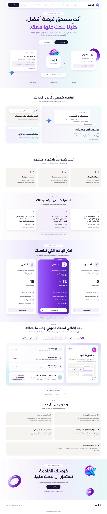
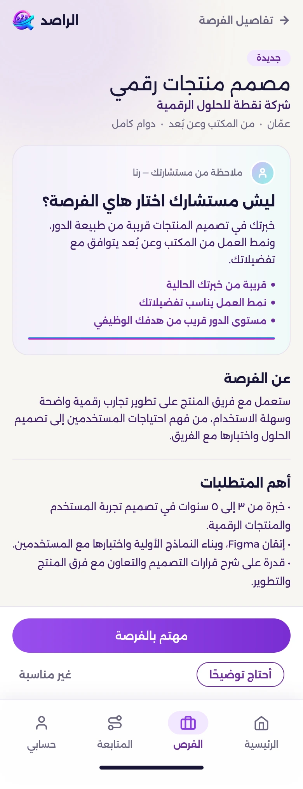

الراصد / إعادة تصميم تجربة وواجهة المستخدم
خدمة بشرية.
وضوح رقمي.
من خدمة تحتاج إلى شرح، إلى تجربة
يفهمها المستخدم، ويتابعها، ويثق بها.
الراصد · الصفحة الرئيسية


٠١ / أبعد من الواجهة
التحدي لم يبدأ
من شكل الشاشة.
بل من فهم الخدمة.
السؤال قبل التصميم
الألوان والبطاقات والخطوط كانت جزءًا من العمل. أما التحوّل الأساسي، فكان توضيح ما تفعله الراصد، ومن يقوم بالعمل، وكيف يعرف المستخدم ما يحدث بعد أن يطلب المساعدة.